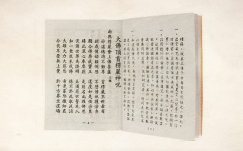

1、放不下“冤亲债主”，因为听某些人说不超度冤亲债主，好像
2、要超度亲眷，但似乎从来没有听说过楞严咒有超度的作用。
3、
4、都知道自己业障深重，但自以为楞严咒没有消业的作用，殊不知楞严咒消业更
5、老听某些人宣传
6、楞严咒还可以用于放生，而且效果特别好。
“更无一切诸魔鬼神。及无始来冤横宿殃。旧业陈债。来相恼害。”
更不会有一切魔鬼神圣，以及无始以来的冤家、横祸、宿业、灾殃、旧债来扰乱侵害。
学佛本来是要放下执着，但很多人反而多了一个执着，执着于冤亲债主，简直欲罢不能！
相信很多学佛人还在患得患失，比如我是回向给冤亲债主啊，还是回向给法界一切众生啊，不回向给冤亲债主，他们是不会障碍我啊，等等。那就诵楞严咒吧！
“十方如来。行此咒心。能于十方摄受亲因。令诸小乘闻秘密藏。不生惊怖。”
十方如来持这秘密咒心，能于十方世界，摄受护念，历劫以来的亲戚眷属，又能令一切小乘人，听到如来藏心的秘密大法，不会惊疑恐怖，还会回小向大。
“十方如来。依此咒心。能于十方拔济群苦。所谓
十方如来，依仗这咒心的威神力量，能到十方世界，救济苦难众生，如地狱、饿鬼、畜生、北俱庐洲、盲聋喑哑、佛前佛后，世智辩聪，和长寿天，以上八种情形是很难听到
“阿难。是善男子持此咒时。设犯禁戒于未受时。之后。众
阿难，这个善男子，在未持咒之前，所犯的一切禁戒，乃属宿罪，现在既能持咒，并发誓不再重犯，则从前所有一切破戒之罪，不论轻和重，都会即时消灭。
“若造五逆无间重罪。及诸
若曾犯弑父弑母、杀阿
“阿难。若有众生。从无量无数劫来。所有一切轻重罪障。从前世来未及忏悔。若能读诵书写此咒。身上带持。若安住处庄宅园馆。如是积业。犹汤销雪。不久皆得悟无生忍。”
阿难，如有众生，从无量无数劫以来，所造轻重罪障，从前世带来，还未能及时忏悔的。假若能至发至诚心，恭敬读诵这佛顶神咒，或恭敬书写，或身佩戴奉持，或供养于自住的庄园馆宅中，那么，这些多劫以来积聚的宿业，就如雪遇沸汤，即时溶化，既然宿障消除，正定现前，则不久之后，便会证得无生法忍。"
“十方如来。依此咒心。能于十方拔济群苦。所谓地狱饿鬼畜生……”
被放的都是畜生物命，楞严咒能拔除它们的苦难，已经很清楚了。
我以前看过一个帖子，放生的师兄只念楞严咒，发现被放的物命在水里跳的特别欢快。
当然，大部分的师兄不可能诵全咒，但在仪轨中加入楞严咒最后的咒心，绝对是一个好方法。
而且，通过每次放生，把楞严咒的种子也给参加的人种下了，弘扬
“此诸众生。纵其自身不作福业。十方如来所有功德。悉与此人。”
这些持咒的众生，纵然自己没有修福，但十方如来所有功德，都会回向给他。
诵持《楞严咒》的众生纵然他自己不做什么福德，十方如来所有的功德都给这个人。你说这便不便宜！你念《楞严咒》，就能常常生在佛出世的时候，和佛一起熏修。 摘自对
“命终之后。随愿往生十方国土。必定不生边地下贱。何况杂形。”
命终之后，可以随自己的愿力，往生十方任何国土，绝对不会生到边地下贱的地方，何况生于地狱饿鬼，奇形杂报的地方呢！（宣化上人浅释）
所以诵楞严咒的人，不要再犹豫自己能否往生